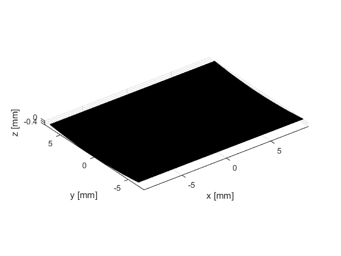
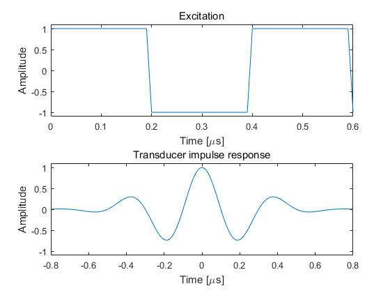
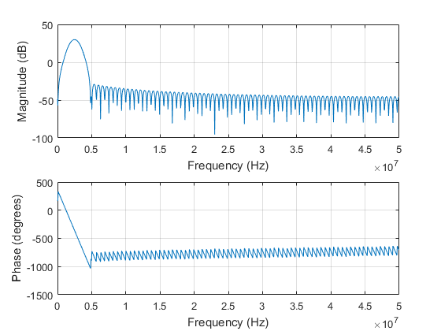
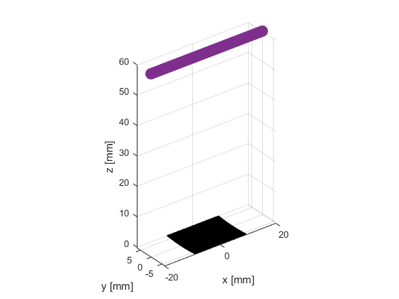
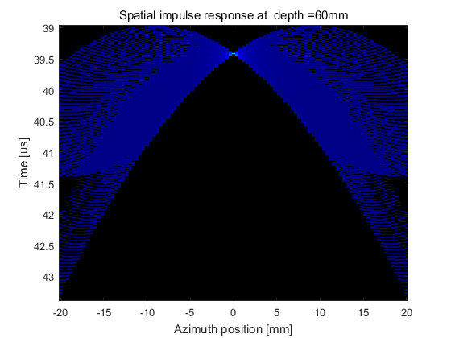
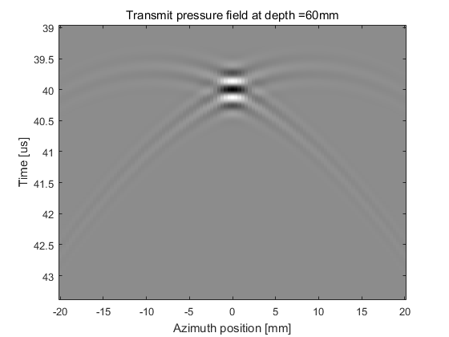
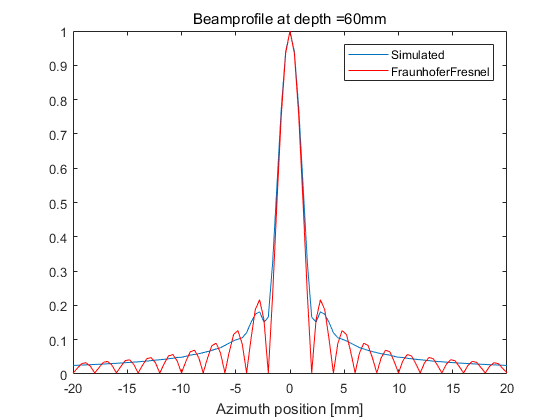

Contents
make sure that field_init has been called
eval('field_init(0)','1;')
*------------------------------------------------------------*
* *
* F I E L D I I *
* *
* Simulator for ultrasound systems *
* *
* Copyright by Joergen Arendt Jensen *
* Version 3.24, May 12, 2014 (Matlab 8.20 version) *
* Web-site: field-ii.dk *
* *
* This is citationware. Note the terms and conditions *
* for use on the web-site at: *
* field-ii.dk/?copyright.html *
* It is illegal to use this program, if the rules in the *
* copyright statement is not followed. *
*------------------------------------------------------------*
DEFINE ARRAY
c = 1540;
f0 = 2.5e6;
fs = 100e6;
lambda = c/f0;
element_height = 13/1000;
pitch = 0.290/1000;
kerf = 0.025/1000;
element_width = pitch-kerf;
Rfocus = 60/1000;
focus = [0 0 60]/1000;
N_elements = 64;
N_sub_x = 5;
N_sub_y = 30;
GENERATE TRANSMIT APERTURE
emit_aperture = xdc_focused_array (N_elements, element_width, element_height, kerf, Rfocus, N_sub_x, N_sub_y, focus);
eval('close(1)','1;')
figure(1)
show_xdc_geir(emit_aperture, 1);
axis equal; view(3)
h_txAp = gcf;
Read rectangular data for plotting....
Plots aperture with physical element number...

SET THE IMPULSE RESPONSE AND EXCITATION OF THE TRANSMIT APERTURE
t_ir = -2/f0:1/fs:2/f0;
Bw = 0.6;
impulse_response=gauspuls(t_ir,f0,Bw);
set_sampling(fs);
xdc_impulse (emit_aperture, impulse_response);
ex_periods = 1.5;
t_ex=(0:1/fs:ex_periods/f0);
excitation=square(2*pi*f0*t_ex);
xdc_excitation (emit_aperture, excitation);
figure(2);
subplot(211);plot(t_ex*1e6, excitation);ylim([-1.1 1.1]);
title('Excitation'); xlabel('Time [\mus]');ylabel('Amplitude');
subplot(212);plot(t_ir*1e6, impulse_response);ylim([-1.1 1.1]);
title('Transducer impulse response'); xlabel('Time [\mus]');ylabel('Amplitude');
figure(3);
freqz(impulse_response, 1, 1024, fs)
Warning: Remember to set all pulses in apertures for the new sampling frequency
 
DEFINE MEASUREMENT POINTS
measDepth = 60/1000;
xStart = -20/1000;
xEnd = 20/1000;
Nmp = 101;
mx = linspace(xStart,xEnd,Nmp)';
my = zeros(Nmp, 1);
mz = measDepth*ones(Nmp,1);
measurement_points = [mx,my,mz];
figure(h_txAp);
hold on;
plot3(measurement_points(:,1)*1000,measurement_points(:,2)*1000,measurement_points(:,3)*1000, 'o', 'linewidth', 6)
axis tight

CALCULATE SPATIAL IMPULSE RESPONSE AND TRANSMIT PRESSURE
[spatImpResp_tx, startTime_tx] = calc_h(emit_aperture, measurement_points);
[pressure_tx, startTime_tx] = calc_hp(emit_aperture, measurement_points);
PLOT RESULTS
figure(4);
tAxh = startTime_tx + (0:size(spatImpResp_tx,1)-1)/fs;
imagesc(mx*1000, tAxh*1e6, spatImpResp_tx);
title(sprintf('Spatial impulse response at depth =%0.3gmm', measDepth*1000));
xlabel('Azimuth position [mm]');
ylabel('Time [us]');
cmap = jet(256);
cmap(1,:) = [0,0,0];
colormap(cmap);
axis tight
figure(5);
tAxhp = startTime_tx + (0:length(pressure_tx)-1)/fs;
imagesc(mx*1000, tAxh*1e6, pressure_tx);
title(sprintf('Transmit pressure field at depth =%0.3gmm', measDepth*1000))
xlabel('Azimuth position [mm]');
ylabel('Time [us]');
colormap(gray(256));
axis tight
figure(6)
bpx = sqrt(mean(pressure_tx.^2));
bpx=bpx/max(bpx);
plot(mx*1000, bpx);
title(sprintf('Beamprofile at depth =%0.3gmm', measDepth*1000))
xlabel('Azimuth position [mm]');
if measDepth==focus(3)
aTx = pitch*N_elements-kerf;
F = focus(3);
bpx_f = sinc(mx/F*aTx/c*f0);
hold on;
plot(mx*1000, abs(bpx_f),'r');
end
legend('Simulated', 'FraunhoferFresnel');
  